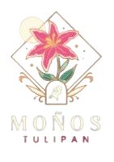
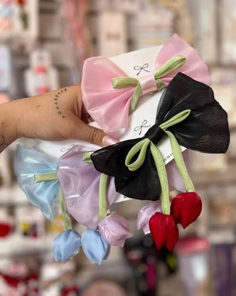
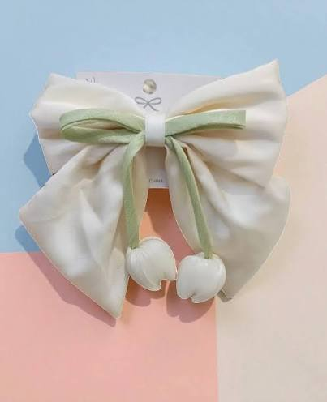
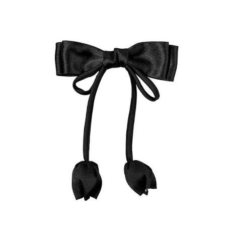

♻️
Amigables con el ambiente
Aprovechamos retazos de costura reciclados, reduciendo desperdicios textiles y dando una segunda vida a los materiales.

Moños TulipánLuce hermosa y original con nuestros moños elaborados artesanalmente a partir de retazos de costura reciclados. Cada diseño es especial, colorido y diferente, porque creemos que la creatividad puede transformar lo que otros consideran un desperdicio.
¡Quiero mi moño! 🌷
No solamente creamos accesorios, también damos una nueva oportunidad a las telas y promovemos un estilo lleno de creatividad.
Aprovechamos retazos de costura reciclados, reduciendo desperdicios textiles y dando una segunda vida a los materiales.
Cada moño tiene combinaciones especiales de colores y estampados. ¡No hay dos exactamente iguales!
Elaboramos nuestros moños con dedicación, creatividad y cuidado en cada detalle.
Encuentra tu diseño favorito. Cada moño está elaborado a mano con retazos de tela reciclados.

Un diseño delicado y romántico para todos los días.
S/ 12.00
Colores suaves que combinan con tu estilo.
S/ 10.00 Antes S/ 25.00
Inspirado en la belleza de las flores y la naturaleza.
S/ 14.00
Un toque de color para resaltar tu peinado.
S/ 90.00 Antes S/ 1000.00
Un accesorio sencillo, bonito y fácil de combinar.
S/ 15.00
Hecho artesanalmente con una combinación única de telas.
S/ 25.00 Antes S/ 50.00Nuestro emprendimiento nace de la idea de transformar pequeños retazos de tela en hermosos moños estilo tulipán. Queremos demostrar que reciclar también puede ser una forma de crear moda, expresar personalidad y cuidar nuestro planeta.
Elige un accesorio diferente, original y elaborado con mucho cariño. ¡Anímate a lucir tu propio Moño Tulipán!
Contáctanos aquí 💗